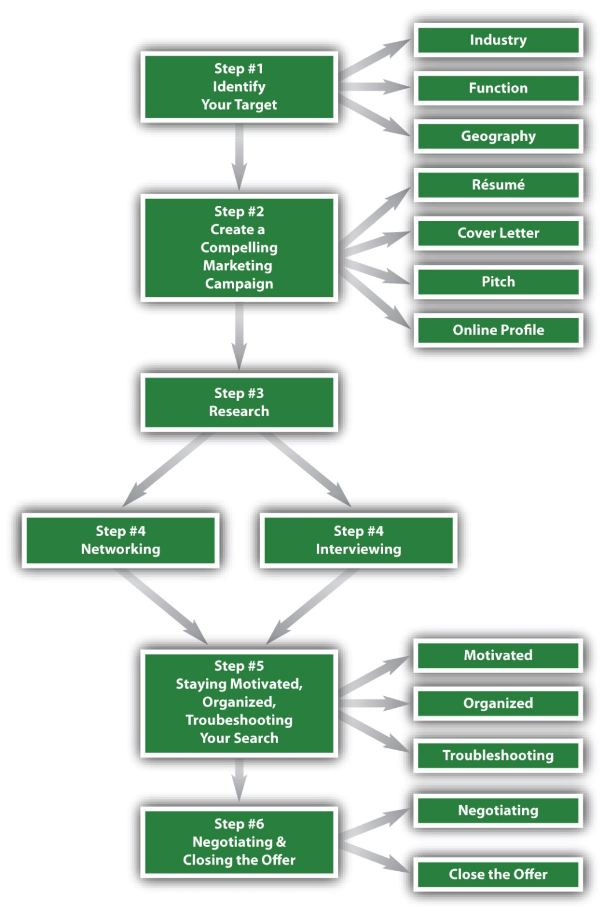

Figure 2.1 The Six-Step Job Search Process
The What and How of Looking for a Job
In the previous chapter, we talked about the why of looking for a job—the reason and the life situation that cause you to search now. This is the variable component of your job search as it changes over time—your next job search may well be for different reasons.
In this chapter, we introduce the six-step job search process, or the what and how of looking for a job. This is a constant structure for your job search, regardless of the reason that may be prompting you to search.
While the specifics of the what and how you look for a job will differ based on your job search technique, personality, and the job market, all job searches share three common characteristics:
Whether it’s an internship, a full-time job, or a career change, every successful search progresses through these three stages. Therefore, if you can move through this progression, taking into account your individual circumstances, then you will meet with job search success. This book breaks down the previously listed job search progression even further into six concrete steps you can take to get the job you want:
Step 1 is where you define what you want. Step 2 is where you attract prospective employers. Step 3 is where you learn in detail about prospective employers so you are prepared when you meet. You likely have done some general exploration into industries, companies, or jobs over your lifetime, which gives you a sense of what you want (for step 1). The research in step 3 is about diving deep and gaining specific knowledge and expertise into your short list of targets. Step 4 gives you the technique for networking meetings and interviews. Step 5 keeps you on track. Step 6 gives you the techniques to negotiate and close an offer—that is, finalizing the deal with an employer who wants to work together.
Follow the six-step process to ensure you are doing everything you need to do to get the job you want. Having a process keeps you moving forward to your end goal.
The six steps of the job search process are laid out in sequential order so you can follow them one at a time:
Many job seekers are overwhelmed at the beginning of their job search. There seems to be so much to do—résumés, interviews, and social mediaOnline communities where you can interact (or socialize) with other people. Facebook and LinkedIn are two examples of popular social media.. It is not surprising that many job seekers are afraid of networking!
A sequential job search process means that you don’t have to worry about what comes next. Focus on where you are for your search, and give yourself time on that step. Before you worry about résumés (or other items in step 2), let yourself explore possibilities, ideals, and desires (step 1). Before you get too anxious about interviewing (step 4), know that you will have the preparation of knowing yourself (step 1), positioning yourself effectively (step 2), and learning about the people and companies you will meet through in-depth research (step 3). There will be time for the job search to progress.
However, as you move through your job search sequentially, this doesn’t mean that you never revisit what you’ve already done. For example, if you are at the stage where you are meeting people (step 4), you are collecting information from these meetings. You might learn that a particular skill or experience is even more important than you initially thought. You may decide to go back to your marketing (step 2) to highlight these items even more in your résumé or structure future cover letters in a different way to emphasize this new information. These marketing changes will happen while you are still interviewing. In the thick of your job search, you will be juggling the six steps concurrently.
You might be juggling different job search targets, each of which is at a different stage. For example, you are interested in sales positions in both the technology industry and the pharmaceutical industry. You start your search focusing on technology companies and you are now at the interview stage with several of them. You have traction in this target, so you add pharmaceutical companies to the mix. You want to research these more before approaching them for interviews, so you are at step 3 for pharmaceuticals, but at step 4 for technology.
While you want to follow the steps sequentially, recognize that there will be instances in your search that the steps are revisited and therefore taken out of sequence. This is a natural part of the search process as you interact with people and situations evolve. Be flexible. Know that you will be learning things along the way—information about jobs, companies, and industries that aren’t advertised—and gaining feedback about your skills and experience. You want to adapt your job search process to these new pieces of information.
The six-step job search process gives you tactics for how to get from where you are to your next job. It is based on the mechanics of how the job market plays out between employers and job candidates. This is important because job seekers often don’t know what to do to secure a job. They may know how to do the job—that is, they have the selling and communication skills and experience for the sales job itself—but getting the job, convincing someone to hire you, is different from doing the actual job. It is the difference between being a good driver and being able to pass the road test. You want to prepare for the road test (in this case, the job search process) in order to get a chance to drive.
But these tactics of the six-step job search process assume you have some fundamentals in place. Getting your driver’s license also assumes you have certain fundamentals—for example, knowledge of traffic laws and proper eyesight. Here are some key fundamentals you will need to launch your job search:
With these fundamentals in place, you can use the process to take you through the mechanics of your search.
If you are waiting until you get a job as proof that you can get one, this prove it attitude will kill your search. You will appear negative and unattractive to employers. You will get derailed by the inevitable obstacles and drop out along your search. You may not even get started if you believe that your efforts will be futile.
Having confidence in your job search means two things:
You have to know you will be successful, and you have to want that success. If you have just one of these two things, this is not sufficient to project enough confidence in your job search. If you believe you will get a job, but don’t believe it will be something you want, you will appear anxious, frustrated, and full of dread. If you are excited about what you want to do, but don’t believe you will get a job doing it, you will appear as if you are not good enough for your prospective employers.
A confident job seeker is someone who is energized at the prospect of finding his or her dream job. A confident job seeker may not be an expert on résumés, interviews, or other job search tactics, but he or she has an innate knowledge that he or she will be able to figure those things out.
This is not arrogance. Prospective employers will shy away from arrogant job candidates who appear to be high-maintenance divas and poor team players. You don’t want to come across as someone who thinks you are better than your future boss or colleagues. Confidence is a healthy, positive attitude.
Ideally, you have confidence before you start your job search. If confidence has been a struggle your whole life or if you feel overly depressed or anxious about your job search specifically, you should seek help from a guidance counselor, therapist, or other professional resource. You want to rule out any medical conditions, such as depression, as the root cause of your anxiety. If you have some nervousness, but not in a crippling way that keeps you from your job search, you can plan to proactively build and maintain your confidence throughout your job search by surrounding yourself with positive influences:
A successful job search is a match between what an employer wants and what a candidate wants. That match is made based on what is communicated. While an interview is structured a specific way, at its core it is a communication between job seeker and employer. While networking has its standards and rules of etiquette, at its core it is about communicating via listening, speaking, writing, and so forth.
The six-step process will give you the tactics that are particular to interviewing, networking, and other job search–specific communications, but the successful job seeker needs to have solid overall communication skills in place in the following areas:
Communication occurs at every stage of the job search.
Table 2.1 Communication Skills Needed for Each Step of the Job Search
| Job Search Step | Written | Verbal | Presentation | Listening |
|---|---|---|---|---|
| 1. Identify Your Target | In the introspective work | In articulating your interests | To advice you are getting | |
| 2. Create A Powerful Marketing Campaign | In the creation of your material | In your networking pitch | In the design of your material and sample portfolio | To responses to your pitch and other marketing |
| 3. Conduct In-Depth Research | To keep track of your information | To gather information | To information shared | |
| 4. Network and Interview | For scheduling, note-taking during meetings, and thank-yous | Before, during, and after meetings and interviews | During specialized interviews | During meetings and interviews |
| 5. Stay Motivated and Organized and Troubleshoot Your Search | To keep track of your data | During support group and mentor meetings | To support and feedback | |
| 6. Negotiate and Close the Offer | For offer letter revisions | To advocate for what you want | To close the deal with senior management | To employers’ needs, wants, and constraints |
You need communications skills for more than understanding and developing rapportCamaraderie, ease, familiarity. You have developed rapport with someone when they feel comfortable around you. with prospective employers. You will also need communication skills on the job, so the way you communicate in your search is a sign of the way you might communicate on the job.
Many employers also look at communication skills in general as a proxy for attention to detail. If you are sloppy with your job search communication—leaving rambling voice mails, sending e-mails with typos or grammatical mistakes—then you likely do this on the job. Why should employers assume you will be more careful after you get the job? If you don’t double-check your communication now, you probably won’t start once you are hired.
Finally, your communication skills underscore your logic and reasoning. If your interview responses are scattered or unrelated, that could be a sign your thought process isn’t logical or structured. If you can’t get to the point in regular conversation, maybe you bring this disorganized reasoning to your work.
Look at your history to see your current communication strengths and weaknesses, so you know where you need to focus as you prepare for a job search. If you know that you are better at written over verbal communication, you might choose e-mail over phone calls in situations that call for either approach (e.g., when you try to get a networking meeting). But you can’t avoid a method of communication entirely, so the verbally challenged should allot extra time to practice interviewing and perhaps take the time away from drafting cover letters, which play to their writing strength. For someone with more verbal than written strengths, they will structure their search differently—practicing different areas and budgeting more time in weak areas that may take longer to strengthen.
If you have already selected job targets, incorporate the communication requirements for your target as you plan your job search process. Some fields, such as education, law, sales, consulting, and public relations, heavily emphasize communication, so each and every correspondence has extra weight. Your job search communication becomes a proxy for your potential communication on the job.
The communication requirements may influence the structure of the process. For communication-focused fields, a presentation as part of the interview process may be required. For other fields that are not communication heavy, such as accounting or IT, you likely will not do a presentation (you may for senior roles, but not generally). Start brushing up on presentation skills now if your job search may specifically require this.
Now you know the general ways communication skills enter the job search equation, as well as specific ways that different fields may use communication skills to evaluate potential job candidates. With the importance of communication skills in mind, you can deliberately focus and practice to improve your communication skills:
The way you dress, carry yourself, and physically behave also communicate your job potential. Your nonverbal communication either supports the things you say and how you say them, or it undermines you. If you are an articulate, well-spoken person but dress in a sloppy manner, slouch, and fidget, then your actions belie your verbal communication. Therefore, poise goes hand in hand with communication as a fundamental prerequisite for your search.
What you wear to different job search functions signals neatness, professionalism, and understanding of general business protocol. A business suit in a dark neutral color is the standard. Black, blue, brown, and gray are neutral colors. Some industries and specific companies within industries dress more casually, so it’s important to consult an experienced person in the specific industries and companies that interest you for the most relevant guidelines. For example, in media and fashion, your dress is a signal of how much you know and can fit into that field. A dark suit would be too bland and look out of place at a fashion-forward company.
For general functions, such as career fairs or professional mixers, stick to proper business attire. Even if there are a range of dress options in attendance, it’s best to be more formally dressed. In addition, most job seekers look more professional and put together with a business suit. You probably will carry yourself more professionally, have better posture, and be more alert in a business suit than in casual attire.
If you are attending an event or an interview where business casual is stipulated, this is still neater and more formal than casual attire. Khakis rather than jeans, dress slacks and a sport coat for men, and a sweater set for women are some examples of business casual.
Here is a checklist of things to remember about dressing professionally:
If you have a great suit but you slouch, that is an incomplete package. Good posture, steady eye contact, and a firm handshake are additional fundamentals to the job search process. Even if you think this is common sense, don’t assume that you will be 100 percent put together once your search starts. If you are not used to dressing professionally and interacting with people in a formal business context, then you may have a weak handshake or poor eye contact and not realize it. Before you get busy with interviews, see if you can attend a business event just as a practice run.
Here is a checklist of things to remember about carrying yourself professionally:
You might look great, carry yourself well, and speak eloquently, but you also communicate with physical gestures and other nonverbal cues. Pay attention to how you use your body during conversations and meetings. You might find that you can’t sit still for long periods of time or that you use a lot of distracting hand gestures. You might be too still and miss opportunities to accentuate points with a nod of the head or finger movement.
Some recruiter pet peeves include the following:
Start practicing good manners now so these habits are ingrained behaviors before your job search.
In a way, the resources you need for your job search can be broken down into three categories:
Time includes not just the time for the six steps of the process (and to work on the fundamentals discussed in this chapter) but also the time away from your current activities. As you add the job search to your calendar, what will you take away?
Space includes the place where you will be doing the work of your job search—computer, phone, desk, a quiet area to focus. Your space must be outfitted with the right equipment but also include fast Internet access, paper, pens, postage and mailing supplies, and other office essentials.
Money is required to outfit your space and for your supplies. In the discussion on professional dress, there may be items listed that you need to purchase. Your job search will require travel to interviews. Networking might entail paying a membership fee to a group or an event fee for a professional mixer. Part of your research strategy might involve taking people to lunch in exchange for information. Many areas of the job search will require a financial investment.
Finding and managing your time will require trade-offs. A proactive job search takes ten to fifteen hours per week. You will need to take this time from other activities. Before your job search starts, take an inventory of everything that is taking up your time. Create a comprehensive calendar that includes the following:
Create a comprehensive activity list that includes necessary but non-time-specific activities:
Look at the unscheduled times and your list of activities. Block out where things might go. Be realistic about when you do your best work. If you have more energy in the morning, reserve that time for your job search activity. If you know you can’t concentrate by end of day, use that time for nonthinking activities, such as housework or exercise.
Well before you start your job search, start moving activities around and make arrangements for your replacement if you need to drop activities. You want to have a schedule in place that supports your job search, not crowds it out.
Your job search is a project, so you need a comprehensive work space. Stocking up supplies in advance of your search enables you to stay focused and not get derailed by a surprise trip to the store. You also want to prepare in advance for services you may need, such as printing, copying, mailing, and faxing. Know the hours of the closest post office and office supply and service store. Know where you can send and receive faxes and where you can do special copying, binding, or printing.
Here is a checklist of ideas for a comprehensive work space:
If you have a very organized friend, enlist his or her help in setting up and decorating your space.
Know your budget for your job search essentials in advance. You can price out the work space items listed previously and the professional dress requirements listed earlier. For job search events you already know about, budget for registration fees and transportation costs. If you want to work with a career coach, factor that into your budget.
Another financial consideration is the opportunity cost of the time spent on your search, as opposed to working. If you have to drop a part-time job to launch your search, there is the cost of lost wages. If you are a student and your job search extends past graduation, there is the cost of supporting yourself while you look. How will you pay for your living expenses? How long can you sustain yourself without a job?
Your financial situation affects the execution and timing of your job search, so you need to decide on these issues prior to your search. If you are relying on family or friends to help with your living expenses, have a candid conversation about both of your expectations before you start your search.
Today’s job search can be characterized by three emerging trends:
With mobile devices and broadband Internet access, it is very easy to connect to people at all times of the day and on weekends. While formal job search activity still centers on normal business hours, it is easier and therefore more acceptable for job search activity to take place at all hours. It can be the middle of the night, and therefore you can still do the following:
Other job candidates will be working hard on their search, so you might feel obligated to compete with this extra time, hence the 24/7 job search. Even if you want to set time boundaries, jobs are increasingly global, so there is a significant chance that you might have to network and interview with people in time zones across the world. Finally, with job insecurity high after the recent recession, it is less likely that you will quit your job outright to devote time to your search. Students don’t have the option to opt out of classes during their job search, so the job search activity is on top of everything else, extending your typical day.
With the tight labor market (more available job candidates than employers ready to hire), the competition is intense. The rise of social media gives job seekers the ability to brand themselves in a way formerly associated only with companies. Job seekers are marketing their job potential the way companies market goods and services. This requires job seekers to develop branding, marketing, and sales skills normally associated with entrepreneurs.
Many job seekers are turning to consulting and freelancing during a protracted job search, thus becoming entrepreneurs by default. Even recent graduates are starting businesses, piecing together several smaller projects rather than a single internship, and consulting or interning after graduating in lieu of full-time employment. Your ability to adopt an entrepreneurial approach to your job search will be necessary as your competition increasingly does the same.
There are four generations currently in the workforce:
Each generation grew up with different work expectations, technology, and communication styles. There is a culture clash as four generations work closely together. Much has been made in the media of the generational clash. As a job seeker, you will likely interview with someone from a different generation who has specific preconceptions of you. You may not change your job search tactics in anticipation of a clash that may not arise, but you want to be sensitive to some of the anxiety in the market.
You can use the 24/7 job search trend to your advantage by using the connectivity as extra time and resources for your job search. If you are comfortable with online research and online social networks, these are helpful tools to add to your job search.
You can incorporate the entrepreneurial techniques of branding, marketing, and sales into the way you brand, market, and sell yourself, thus enhancing your job search skills. If you can get consulting or freelance work while you search, that is a bonus for your finances and your experience base.
The multigenerational workforce is ripe for conflict, but there are also additional opportunities to add value as a collaborative team player. Be aware that communication styles, work styles, and expectations are different among the generations. Make a concerted effort to build rapport when you are dealing with everyone, but especially people in different generations from yourself. Do not assume that they share your same preferences.
The six-step job search process provides a constant structure that works for a variety of life situations, including students looking for an internship or full-time job, career changers, people relocating for work, or people coming back to work after unemployment or a leave of absence. The steps are designed to give you a framework to follow and keep the job search process from becoming overwhelming. But the framework is not fixed, so you should expect to revisit the steps as needed to refine and adjust your search along the way.
In addition to the six steps of the job search, you need to have a foundation in place for job search success, including confidence you can get a job, strong communication skills, poise and professional presence, and the physical resources to support your search. You also should be aware of trends in the job market, including 24/7 communication capability that encourages people to overwork, an entrepreneurial approach to the job search that translates the business techniques of branding, marketing, and sales to the individual, and the multigenerational workplace. We have four generations active in the workplace, so the probability of dealing with someone much older or younger than you is significant. Do not assume that people have the same expectations and behaviors as you, and focus instead on building rapport individual by individual.
Go to http://www.successhawk.com and click on “Log In.” You will then be asked to sign up.
After enrolling, your first step is to complete “My Account: Current Job Status.” This action sets algorithms that activate the updating feature in SuccessHawk’s Contact Manager.

Take a moment to see the resources SuccessHawk provides and how to navigate the site. As with any new software, SuccessHawk may seem complicated at first, but with a little practice, you will find it easy to use.